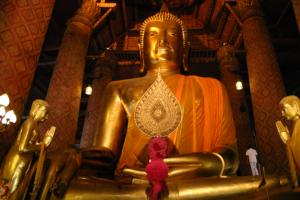
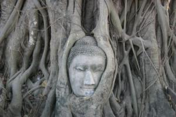

Le 28 décembre 2004,
 Suite aux événements qui ont eu lieu il y a 2 jours, nous décidons de changer nos plans et de partir dans le Nord plutôt que de descendre sur Pattaya comme c’était prévu à l’origine. Nous voilà partis pour Ayuthaya, ancienne capitale du royaume du Siam. Apres une heure de taxi pour nous emmener jusqu’au terminal des bus (les embouteillages a Bangkok, c’est pire qu’à Paris !) et 2 heures de bus archi-climatisé, nous descendons à Ayuthaya ou de nombreux tuk-tuk nous attendent de pied ferme... Nous essayons plusieurs guest-houses mais tout est complet ! C’est vrai que nous sommes en pleine période de fêtes... Au bout du 3eme essai, c’est gagné, nous prenons la dernière chambre qu’ils leur restent.
 Le chauffeur du tuk-tuk qui nous a promené pendant un moment afin de trouver une place ou dormir, nous propose de faire un circuit de 4 heures avec lui pour découvrir les principales curiosités de la ville. Nous avions regardé le guide qui disait que les sites intéressants étaient assez éloignés les uns des autres dans cette ville. Et puis, nous n’avons pas envie de nous embêter aujourd’hui à négocier les prix des courses, à décider quels sites il faudrait absolument visiter... Nous nous remettons a notre guide qui nous balade de temples en ruines sans que nous n’ayons à nous occuper de quoi que ce soit !... Le bonheur ! Il nous emmène même admirer le coucher du soleil au bord d’un canal. Bon d’accord, il se couche juste derrière des fils électriques, mais c’est déjà pas mal ! Le ciel se voile d’un rouge pourpre qui embellit toute la ville. Notre chauffeur nous emmène maintenant voir les ruines illuminées, c’est vraiment magnifique ! Nous revenons a la guest-house enchantés de notre promenade...
Il y a la télévision dans le hall de la guest-house, nous pouvons voir quelques images du raz de marée qui a recouvert le sud du pays... C’est horrible ! J’ai une pensée vraiment émue pour toutes les victimes et leur famille... Sans parler des conséquences de cette catastrophe pour les survivants des endroits touchés ! Nous allons nous renseigner pour savoir comment il est possible de les aider, en donnant des dons à "la croix rouge" ou a "médecins sans frontière" par exemple... Je pense que seule une grande solidarité de tous les pays envers eux pourra les aider. N’oublions pas que ça aurait pu arriver a n’importe qui d’entre nous...
Eve-Laure
{kind=link}
{kind=link}
{kind=link}